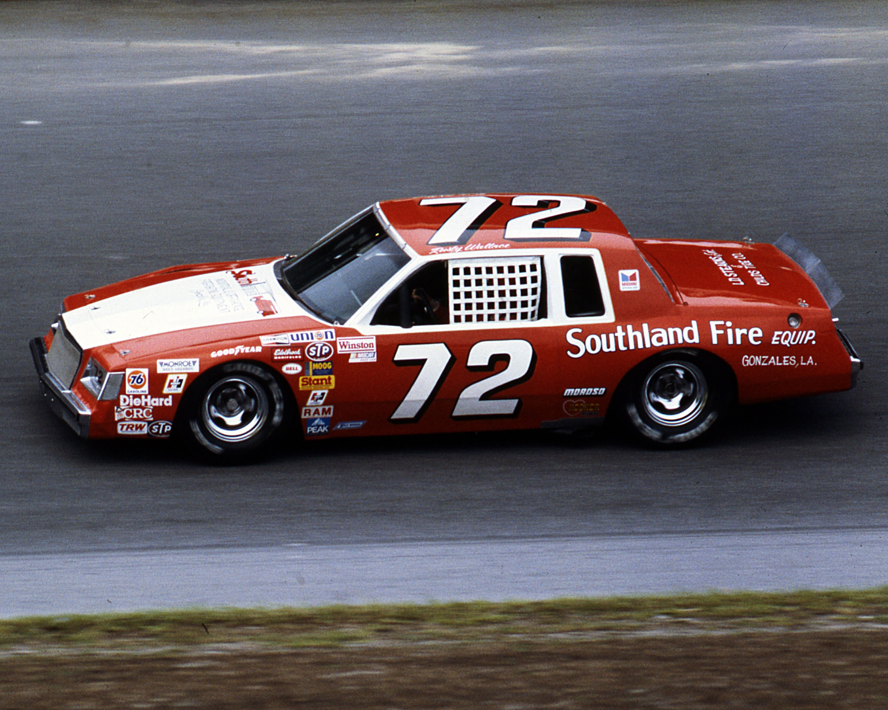
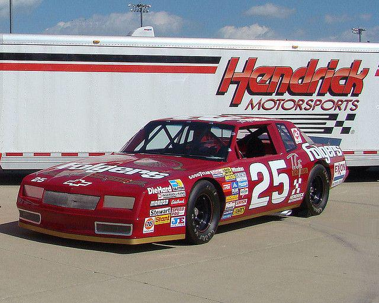
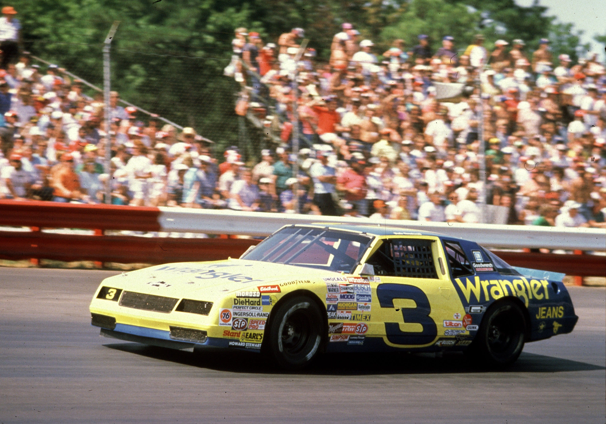
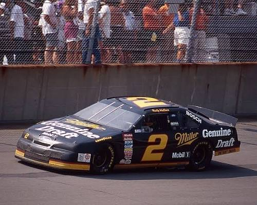
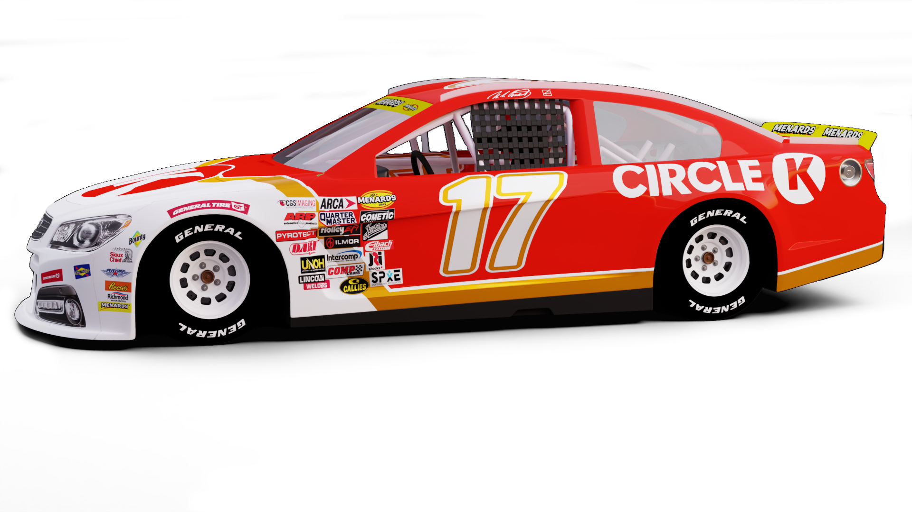
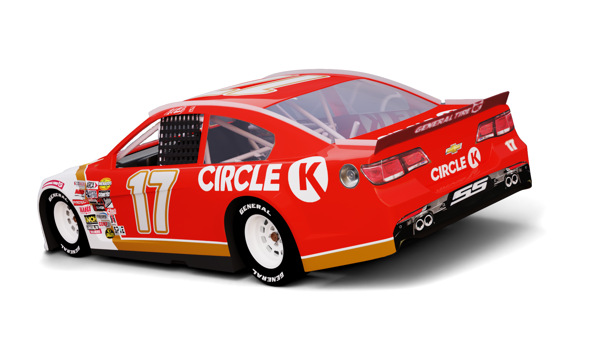
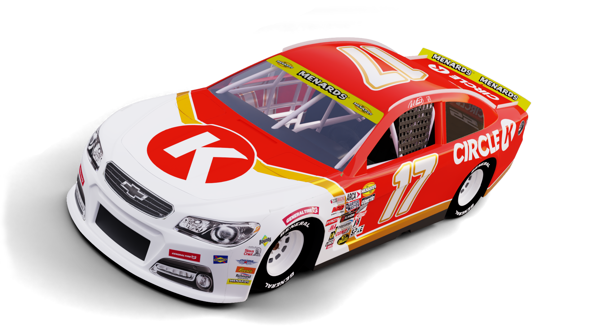
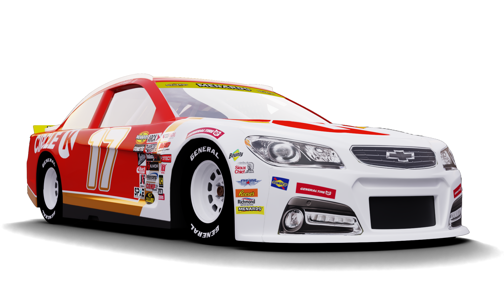

Livery Graphics
Livery · 2025
Circle K

Role
Livery Design & BrandingScope
Full-Body Paint Scheme · Promo GraphicsTools
Illustrator · Photoshop · InDesignA custom NASCAR style paint scheme for the Circle K #17 ARCA Chevrolet SS, created for the iRacing sim racing series.
The design brings Circle K’s retail branding onto the car in a bold, high contrast layout.
01Problem
Create a Circle K race car that is easy to recognize at speed and reads clearly from every camera angle.
02Solution
The retro adjacent design is used to connect to the race fans of the past while using modern stickering and fonts to keep this car in the present. Using a simple base for car design makes the scheme recognizable as a weekly scheme for the team.
03PRECIDENT




Process
These old cars are usually one or two colored with a main stripe, and that's it. Sometimes less is more with paint schemes where the goal is to be recognisable.
04Product




05Poster